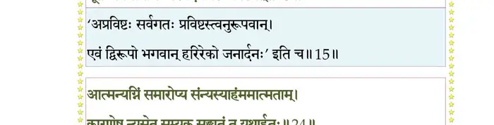
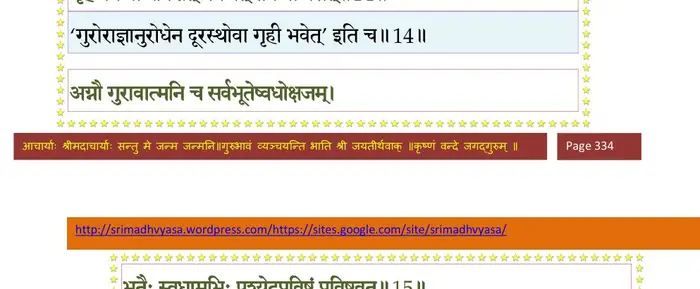
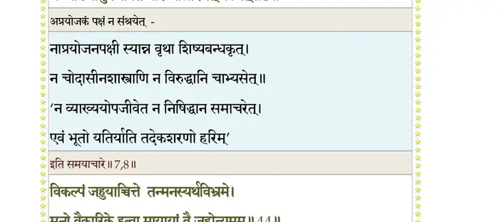
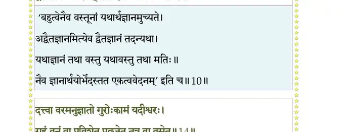
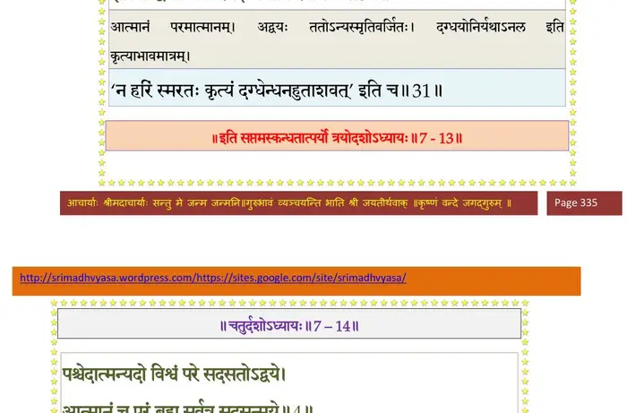

स्कन्ध 7 · अध्याय 13
श्लोक १
नारद उवाच–
कल्पस्त्वेवं परिव्रज्य देहमात्रावशेषितः ।
ग्रामैकरात्रविधिना निरपेक्षश्चरेन्महीम्।। १ ।।
कल्पस्त्वेवं परिव्रज्य देहमात्रावशेषितः ।
ग्रामैकरात्रविधिना निरपेक्षश्चरेन्महीम्।। १ ।।
श्लोक २
बिभृयाद् यद्यसौ वासः कौपीनाच्छादनं परम् ।
त्यक्तं न लिङ्गदण्डाभ्यामन्यत् किञ्चिदनापदि।। २ ।।
त्यक्तं न लिङ्गदण्डाभ्यामन्यत् किञ्चिदनापदि।। २ ।।
श्लोक ३
एक एव चरेद् भिक्षुरात्मारामोऽनपाश्रयः ।
सर्वभूतसुहृच्छान्तो नारायणपरायणः।। ३ ।।
सर्वभूतसुहृच्छान्तो नारायणपरायणः।। ३ ।।
श्लोक ४
पश्येदात्मन्यदो विश्वं परे सदसतोऽद्वये ।
आत्मानं च परं ब्रह्म सर्वत्र सदसन्मये।। ४ ।।
आत्मानं च परं ब्रह्म सर्वत्र सदसन्मये।। ४ ।।
भागवततात्पर्यनिर्णय
श्लोक ५
सुप्तप्रबोधयोः सन्धावत्मनो गतिमात्मदृक् ।
पश्यन् बन्धं च मोक्षं च मायामात्रं न वस्तुतः।। ५ ।।
पश्यन् बन्धं च मोक्षं च मायामात्रं न वस्तुतः।। ५ ।।
श्लोक ६
नाभिनन्देद् ध्रुवं मृत्युमध्रुवं वा स्वजीवितम् ।
कालं परं प्रतीक्षेत भूतानां प्रभवाप्ययम्।। ६ ।।
कालं परं प्रतीक्षेत भूतानां प्रभवाप्ययम्।। ६ ।।
भागवततात्पर्यनिर्णय

श्लोक ७
नासच्छास्त्रेषु सज्जेत नोपजीवेत जीविकाम् ।
अतिवादान् त्यजेत् तर्कान् पक्षं कञ्चिन्न संश्रयेत्।। ७ ।।
अतिवादान् त्यजेत् तर्कान् पक्षं कञ्चिन्न संश्रयेत्।। ७ ।।
भागवततात्पर्यनिर्णय

श्लोक ८
न शिष्याननुबध्नीत ग्रन्थान् नैवाभ्यसेद् बहून् ।
न व्याख्यामुपजीवेत नारम्भानारभेत् क्वचित्।। ८ ।।
न व्याख्यामुपजीवेत नारम्भानारभेत् क्वचित्।। ८ ।।
भागवततात्पर्यनिर्णय

श्लोक ९
न यतेराश्रमः प्रायो धर्महेतुर्महात्मनः ।
शान्तस्य समचित्तस्य बिभृयादुत वा त्यजेत्।। ९ ।।
शान्तस्य समचित्तस्य बिभृयादुत वा त्यजेत्।। ९ ।।
श्लोक १०
अव्यक्तलिङ्गो व्यक्तार्थो मनीष्युन्मत्तबालवत् ।
कविर्मूकवदात्मानमदृश्यो दर्शयेन्नृणाम्।। १० ।।
कविर्मूकवदात्मानमदृश्यो दर्शयेन्नृणाम्।। १० ।।
श्लोक ११
अत्राप्युदाहरन्तीममितिहासं पुरातनम् ।
प्रह्लादस्य च संवादं मुनेराजगरस्य च।। ११ ।।
प्रह्लादस्य च संवादं मुनेराजगरस्य च।। ११ ।।
श्लोक १२
तं शयानं धरोपस्थे कावेर्यां सिंहसानुनि ।
रजस्वलैस्तनूद्देशैर्निगूढामलतेजसम्।। १२ ।।
रजस्वलैस्तनूद्देशैर्निगूढामलतेजसम्।। १२ ।।
श्लोक १३
ददर्श लोकान् विचरन् लोकतत्त्वविवित्सया ।
वृतोऽमात्यैः कतिपयैः प्रह्लादो भगवत्प्रियः।। १३ ।।
वृतोऽमात्यैः कतिपयैः प्रह्लादो भगवत्प्रियः।। १३ ।।
श्लोक १४
कर्मणाऽऽकृतिभिर्वाचा लिङ्गैर्वर्णाश्रमादिभिः ।
नाविन्दत जनोऽयं वै सोऽसाविति न वेति च।। १४ ।।
नाविन्दत जनोऽयं वै सोऽसाविति न वेति च।। १४ ।।
श्लोक १५
तं नत्वाऽभ्यर्च्य विधिवत् पादयोः शिरसा स्पृशन् ।
विवित्सुरिदमप्राक्षीन्महाभागवतोऽसुरः।। १५ ।।
विवित्सुरिदमप्राक्षीन्महाभागवतोऽसुरः।। १५ ।।
श्लोक १५
प्रह्लाद उवाच–
बिभर्षि कायं पीवानं सोद्यमो भोगवान् यथा ।
वित्तं नैवाद्य भवतो भोगो वित्तवतामिह ।। १५ ।।
बिभर्षि कायं पीवानं सोद्यमो भोगवान् यथा ।
वित्तं नैवाद्य भवतो भोगो वित्तवतामिह ।। १५ ।।
श्लोक १६
भोगिनां खलु देहोऽयं पीवा भवति नान्यथा।। १६ ।।
श्लोक १८
न ते शयानस्य निरुद्यमस्य ब्रह्मन्निहार्थो यत एव भोगाः ।
अभोगिनोऽयं तव विप्र देहः पीवा यतस्तद् वद नः क्षमं चेत्।।१७
कविः कल्पो निपुणदृक् चित्रप्रियकथः समः ।
लोकस्य कुर्वतः कर्म शेषे न द्वेष्टि नौषि वा।। १८ ।।
अभोगिनोऽयं तव विप्र देहः पीवा यतस्तद् वद नः क्षमं चेत्।।१७
कविः कल्पो निपुणदृक् चित्रप्रियकथः समः ।
लोकस्य कुर्वतः कर्म शेषे न द्वेष्टि नौषि वा।। १८ ।।
श्लोक १९
नारद उवाच–
स इत्थं दैत्यपतिना परिपृष्टो महामुनिः ।
स्मयमानस्तमभ्याह तद्वागमृतयन्त्रितः।। १९ ।।
स इत्थं दैत्यपतिना परिपृष्टो महामुनिः ।
स्मयमानस्तमभ्याह तद्वागमृतयन्त्रितः।। १९ ।।
श्लोक २०
ब्राह्मण उवाच–
वेदेदमसुरश्रेष्ठ भवान् नन्वार्यसम्मतः ।
ईहोपरमयोर्नॄणां पदमध्यात्मचक्षुषा।। २० ।।
वेदेदमसुरश्रेष्ठ भवान् नन्वार्यसम्मतः ।
ईहोपरमयोर्नॄणां पदमध्यात्मचक्षुषा।। २० ।।
श्लोक २१
यस्य नारायणो देवो भगवान् हृद्गतः सदा ।
भक्त्या केवलया श्लिष्टो धुनोति ध्वान्तमर्कवत्।। २१ ।।
भक्त्या केवलया श्लिष्टो धुनोति ध्वान्तमर्कवत्।। २१ ।।
भागवततात्पर्यनिर्णय

श्लोक २२
अथापि ब्रूमहे प्रश्नान् तव राजन् यथाश्रुतम् ।
सम्भाषणीयो हि भवानात्मनः शुद्धिमिच्छता।। २२ ।।
सम्भाषणीयो हि भवानात्मनः शुद्धिमिच्छता।। २२ ।।
श्लोक २३
तृष्णया भववाहिन्या ग्राम्यकामैरपूर्णया ।
कर्माणि कार्यमाणोऽहं नानायोनिषु योजितः।। २३ ।।
कर्माणि कार्यमाणोऽहं नानायोनिषु योजितः।। २३ ।।
श्लोक २४
यदृच्छया लोकमिमं प्रापितः कर्मभिर्भ्रमन् ।
स्वर्गापवर्गयोर्द्वारं तिरश्चां पुनरस्य च।। २४ ।।
स्वर्गापवर्गयोर्द्वारं तिरश्चां पुनरस्य च।। २४ ।।
श्लोक २५
अत्रापि दम्पतीनां च सुखायान्यापनुत्तये ।
कर्माणि कुर्वतां दृष्ट्वा निवृत्तोऽस्मि विपर्ययम्।। २५ ।।
कर्माणि कुर्वतां दृष्ट्वा निवृत्तोऽस्मि विपर्ययम्।। २५ ।।
श्लोक २६
सुखमस्यात्मनो रूपं सर्वेहोपरतेर्हि यत् ।
मनःसंस्पर्शजान् दृष्ट्वा भोगान् शस्तान्न संविशेत्।। २६ ।।
मनःसंस्पर्शजान् दृष्ट्वा भोगान् शस्तान्न संविशेत्।। २६ ।।
श्लोक २७
इत्येतदात्मनः स्वार्थं सन्तं विस्मृत्य वै पुमान् ।
विचित्रामसति द्वैते घोरामाप्नोति संसृतिम्।। २७ ।।
विचित्रामसति द्वैते घोरामाप्नोति संसृतिम्।। २७ ।।
श्लोक २८
जलं तदुद्भवैश्छन्नं हित्वाऽज्ञो जलकाम्यया ।
मृगतृष्णामुपाधावेत् तथाऽन्यत्रार्थदृक् स्वतः।। २८ ।।
मृगतृष्णामुपाधावेत् तथाऽन्यत्रार्थदृक् स्वतः।। २८ ।।
भागवततात्पर्यनिर्णय

श्लोक २९
देहादिभिर्देवतन्त्रैरात्मनः सुखमीहतः ।
दुःखात्ययं वाऽनीशस्य क्रिया मोघाः कृताः कृताः।। २९ ।।
दुःखात्ययं वाऽनीशस्य क्रिया मोघाः कृताः कृताः।। २९ ।।
श्लोक ३०
आध्यात्मिकादिभिर्दुःखैरविमुक्तस्य कर्हिचित् ।
मर्त्यस्य कृच्छ्रोपनतैरर्थैः कामैः क्रियेत किम्।। ३० ।।
मर्त्यस्य कृच्छ्रोपनतैरर्थैः कामैः क्रियेत किम्।। ३० ।।
श्लोक ३१
पश्यामि धनिनां क्लेशं लुब्धानामजितात्मनाम् ।
भयादलब्धनिद्राणां सर्वतोऽपि विशङ्किनाम्।। ३१ ।।
भयादलब्धनिद्राणां सर्वतोऽपि विशङ्किनाम्।। ३१ ।।
श्लोक ३२
राजतश्चोरतः शत्रोः स्वजनात् पशुपक्षितः ।
अर्थिभ्यः कालतः स्वस्मात् नित्यं प्राणार्थवद्भयम्।। ३२ ।।
अर्थिभ्यः कालतः स्वस्मात् नित्यं प्राणार्थवद्भयम्।। ३२ ।।
श्लोक ३३
शोकमोहभयक्रोधा रागक्लैब्यश्रमादयः ।
यन्मूलाः स्युर्नृणां जह्यात् स्पृहां प्राणार्थयोर्बुधः।। ३३ ।।
यन्मूलाः स्युर्नृणां जह्यात् स्पृहां प्राणार्थयोर्बुधः।। ३३ ।।
श्लोक ३४
मधुकारमहासर्पौ लोकेऽस्मिन् नो गुरूत्तमौ ।
वैराग्यं परितोषं च प्राप्ता यच्छिक्षया वयम्।। ३४ ।।
वैराग्यं परितोषं च प्राप्ता यच्छिक्षया वयम्।। ३४ ।।
श्लोक ३५
विरागः सर्वकामेभ्यः शिक्षितो मे मधुव्रतात् ।
कृच्छ्राप्तं मधु तद्वित्तं हत्वाऽप्यन्यो हरेत् पतिम्।। ३५ ।।
कृच्छ्राप्तं मधु तद्वित्तं हत्वाऽप्यन्यो हरेत् पतिम्।। ३५ ।।
श्लोक ३६
अनीहः परितुष्टात्मा यदृच्छोपनतादहम् ।
नो चेच्छये बह्वहानि महाहिरिव सत्त्ववान्।। ३६ ।।
नो चेच्छये बह्वहानि महाहिरिव सत्त्ववान्।। ३६ ।।
श्लोक ३७
क्वचिदल्पं क्वचिद् भूरि भुञ्जेऽन्नं साध्वसाधु वा ।
क्वचिद् भूरिगुणोपेतं गुणहीनमुत क्वचित्।। ३७ ।।
क्वचिद् भूरिगुणोपेतं गुणहीनमुत क्वचित्।। ३७ ।।
श्लोक ३८
श्रद्धयोपहृतं क्वापि कदाचिन्मानवर्जितम् ।
भुञ्जे भुक्त्वाऽथ कस्मिंश्चिद् दिवा नक्तं यदृच्छया।। ३८ ।।
भुञ्जे भुक्त्वाऽथ कस्मिंश्चिद् दिवा नक्तं यदृच्छया।। ३८ ।।
श्लोक ३९
क्षौमं दुकूलमजिनं चीरं वल्कलमेव वा ।
वसेऽन्यदपि सम्प्राप्तं दिष्टभुक् तुष्टधीरहम्।। ३९ ।।
वसेऽन्यदपि सम्प्राप्तं दिष्टभुक् तुष्टधीरहम्।। ३९ ।।
श्लोक ४०
क्वचिच्छये धरोपस्थे तृणपर्णाश्मभस्मसु ।
क्वचित् प्रासादपर्यङ्के कशिपौ वा परेच्छया।। ४० ।।
क्वचित् प्रासादपर्यङ्के कशिपौ वा परेच्छया।। ४० ।।
श्लोक ४१
क्वचित् स्नातोऽनुलिप्ताङ्गः सुवासाः स्रगलङ्कृतः ।
रथेभाश्वैश्चरे क्वापि दिग्वासा ग्रहवत् क्वचित्।। ४१ ।।
रथेभाश्वैश्चरे क्वापि दिग्वासा ग्रहवत् क्वचित्।। ४१ ।।
श्लोक ४२
नाहं निन्दे च न स्तौमि स्वभावविषमं जनम् ।
एतेषां श्रेय आशासे उतैकात्म्यं महात्मनि।। ४२ ।।
एतेषां श्रेय आशासे उतैकात्म्यं महात्मनि।। ४२ ।।
श्लोक ४३
विकल्पं जुहुयाच्चित्ते तन्मनस्यर्थविभ्रमे ।
मनो वैकारिके हुत्वा मायायां वै जुहोत्यमुम्।। ४३ ।।
मनो वैकारिके हुत्वा मायायां वै जुहोत्यमुम्।। ४३ ।।
श्लोक ४४
आत्मानुभूतौ तां मायां जुहुयात् सत्यदृङ् मुनिः ।
ततो निरीहो विरमेत् स्वानुभूत्याऽत्मनि स्थितः।। ४४ ।।
ततो निरीहो विरमेत् स्वानुभूत्याऽत्मनि स्थितः।। ४४ ।।
भागवततात्पर्यनिर्णय
श्लोक ४५
स्वात्मवृत्तं मयेत्थं ते सुगुप्तमनुवर्णितम् ।
व्यपेतं लोकशास्त्राभ्यां भवान् हि भगवत्प्रियः।। ४५ ।।
व्यपेतं लोकशास्त्राभ्यां भवान् हि भगवत्प्रियः।। ४५ ।।
श्लोक ४६
नारद उवाच–
धर्मं पारमहंस्यं वै मुनेः श्रुत्वाऽसुरेश्वरः ।
पूजयित्वा ततः प्रीतः आमन्त्र्य प्रययौ गृहान्।। ४६ ।।
धर्मं पारमहंस्यं वै मुनेः श्रुत्वाऽसुरेश्वरः ।
पूजयित्वा ततः प्रीतः आमन्त्र्य प्रययौ गृहान्।। ४६ ।।
।। इति श्रीमद्भागवते सप्तमस्कन्धे त्रयोदशोऽध्यायः ।।